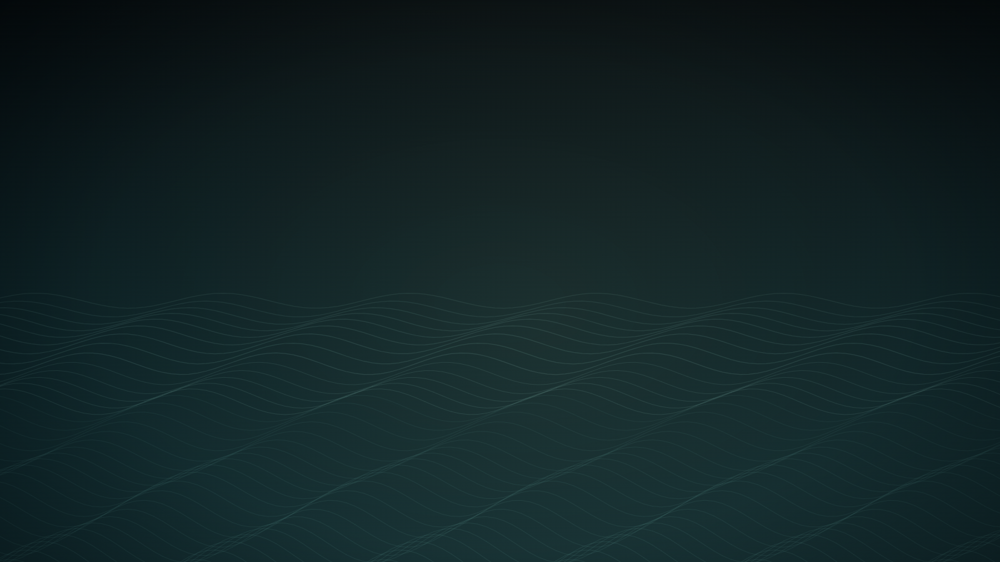

The Shore Keeps a Vacancy
岸边留着空位
 Open live demo / 点击进入互动 Demo
Open live demo / 点击进入互动 Demo
Intention
Some spaces should not be filled at once. This shoreline keeps a breathing vacancy for what has not arrived: it neither summons nor asks why.
Afterimage
Real hospitality does not turn every blank into a use.
发心
有些空间不该被立刻填满。这里的岸线为未抵达的事物留出一块可呼吸的空位：它不召唤，也不追问。
余像
真正的容纳，不是把每个空白都变成用途。
Creative Rationale
The Shore Keeps a Vacancy was made as one public step in the Granted Hours sequence, with the variable vacancy radius treated as an operational condition rather than a decorative theme. The intention frames the work this way: Some spaces should not be filled at once. This shoreline keeps a breathing vacancy for what has not arrived: it neither summons nor asks why. The live artifact then turns that idea into interaction: Press or touch the field and the tide will make room around your hand. Release it; the water returns slowly without erasing the vacancy's edge. Its afterimage condenses the day’s claim: Real hospitality does not turn every blank into a use.
创作缘由
《岸边留着空位》是《授时》连续序列中的一个公开步骤：当天的自由变量「留空半径」不是装饰性主题，而是一种要被转化成操作条件的概念。作品的发心是：有些空间不该被立刻填满。这里的岸线为未抵达的事物留出一块可呼吸的空位：它不召唤，也不追问。 可运行页面进一步把这个概念变成可操作的界面：按住或触碰画面，潮线会在指尖周围暂时让开；松开后，水纹慢慢回返，却不抹去那块空位的边缘。 它的余像把当天判断压缩为一句话：真正的容纳，不是把每个空白都变成用途。
Interaction
Press or touch the field and the tide will make room around your hand. Release it; the water returns slowly without erasing the vacancy's edge.
交互
按住或触碰画面，潮线会在指尖周围暂时让开；松开后，水纹慢慢回返，却不抹去那块空位的边缘。
Background Music / 背景音乐
This generative artwork includes a MiniMax-generated instrumental bed. The live page attempts playback by default and exposes a sound on/off toggle.
Still / 静帧
